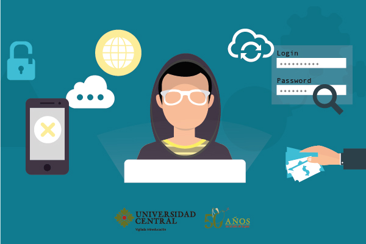
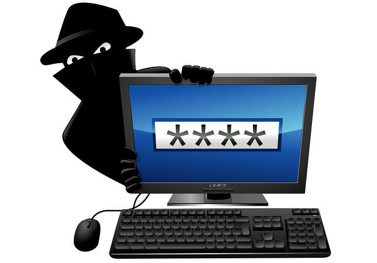
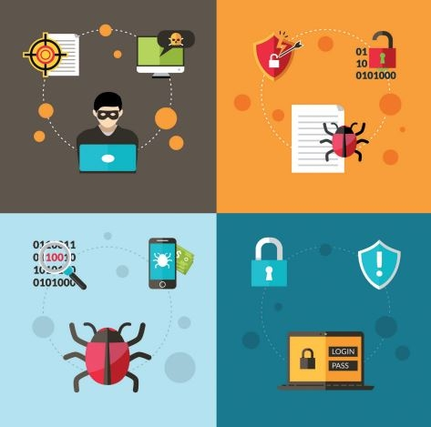

La seguridad informática en términos generales
Al hablar de términos de seguridad informática se debe entender a las bases que conforman los cimientos de esta ciencia, para las partes más complejas de esta disciplina, una de estas bases es el concepto de seguridad, la cual consiste en un estado de bienestar, es la ausencia de riesgo por la confianza que existe en alguien o algo, si la seguridad se aborda desde el tema disciplinario el concepto se puede definir como una ciencia interdisciplinaria para evaluar y gestionar los riesgos a los que se encuentra una persona, un animal, el ambiente o un bien. Existen países en donde la seguridad es un tema nacional, aunque depende del tipo de seguridad, existen muchos tipos de ésta, por ejemplo, la seguridad ambiental, la seguridad económica, la seguridad sanitaria y en casi la mayoría de los países cuando se hace un análisis de la palabra seguridad, se hace referencia a la seguridad de las personas, por ejemplo, evitar el estado de riesgo de un robo, de un daño físico o de un bien material. La seguridad siempre busca la gestión de riesgos, esto quiere decir que se tenga siempre una forma de evitarlo o prevenirlo y que se pueda realizar ciertas acciones para evitar esas situaciones de la mejor forma. Se definió que la seguridad podría ser catalogada como la ausencia de riesgo, la definición de este término involucra cuatro acciones que siempre están inmersas en cualquier asunto de seguridad como son:
• Prevención del riesgo
• Transferir el riesgo
• Mitigar el riesgo
• Aceptar el riesgo
Así que, cuando se está buscando hacer algo más seguro, estas acciones son algo que se debe de considerar sin importar el área, se aplica a cualquier intento de tener mejor o mayor seguridad en cualquier tema que se requiera.
 Beneficios de la seguridad informática:
La tecnología avanza cada día a pasos agigantados y aunque parezca exagerado lo que se comparte en internet te puede exponer. Es por eso que el cuidado de la información personal o empresarial debe ser una prioridad.
Siempre es bueno que conozcas cuáles son las ventajas de proteger tus datos en internet con un buen sistema de seguridad informática. Ya sea para información personal o en el ámbito empresarial, debes contar con la protección necesaria para no comprometer tu seguridad. Esto será de provecho y te ayudará a estar tranquilo en el mundo digital.
• Se encarga de garantizar la privacidad de cualquier sistema informático o de cualquier usuario.
• Permite la creación de barreras utilizando herramientas de protección como: antivirus y anti espías.
• Crea buenas medidas de seguridad que evitan al máximo los problemas que puedan ocasionar cualquier extraño.
• Alerta si de alguna u otra forma están intentando entrar a algún sistema.
• Ayuda a observar el comportamiento de los sitios web no seguros para analizar el riesgo.
• Protege varios dispositivos a la vez sin mucho esfuerzo.
• Orienta en los pasos que debes dar para perfeccionar el tema de seguridad, gracias a un análisis preventivo.
• Contar con un plan para proteger tus datos personales siempre es importante al momento de conectarse a internet.Existen varias formas de blindar tus equipos y cuidar la información compartida.
Beneficios de la seguridad informática:
La tecnología avanza cada día a pasos agigantados y aunque parezca exagerado lo que se comparte en internet te puede exponer. Es por eso que el cuidado de la información personal o empresarial debe ser una prioridad.
Siempre es bueno que conozcas cuáles son las ventajas de proteger tus datos en internet con un buen sistema de seguridad informática. Ya sea para información personal o en el ámbito empresarial, debes contar con la protección necesaria para no comprometer tu seguridad. Esto será de provecho y te ayudará a estar tranquilo en el mundo digital.
• Se encarga de garantizar la privacidad de cualquier sistema informático o de cualquier usuario.
• Permite la creación de barreras utilizando herramientas de protección como: antivirus y anti espías.
• Crea buenas medidas de seguridad que evitan al máximo los problemas que puedan ocasionar cualquier extraño.
• Alerta si de alguna u otra forma están intentando entrar a algún sistema.
• Ayuda a observar el comportamiento de los sitios web no seguros para analizar el riesgo.
• Protege varios dispositivos a la vez sin mucho esfuerzo.
• Orienta en los pasos que debes dar para perfeccionar el tema de seguridad, gracias a un análisis preventivo.
• Contar con un plan para proteger tus datos personales siempre es importante al momento de conectarse a internet.Existen varias formas de blindar tus equipos y cuidar la información compartida.
 VENTAJAS Y DESVENTAJAS DE LA SEGURIDAD INFORMÁTICA
VENTAJAS Y DESVENTAJAS DE LA SEGURIDAD INFORMÁTICA
VENTAJAS:
• Es probable que los estándares de seguridad de datos sean más altos en el entorno de su proveedor que en su empresa, especialmente si el proveedor de la nube cuenta con las normas ISO y otros estándares clave de la industria.
• Posiblemente, su proveedor de la nube tenga mejores recursos físicos y financieros que usted, para contrarrestar las amenazas a la seguridad de los datos a las que se enfrenta su infraestructura.
• Sus datos aún estarán disponibles, incluso si pierde una laptop.
• Se encarga de asegurar la integridad y privacidad de la información de un (Informatica, 2015) (Informatica, 2015) (Informatica, 2015)sistema informático y sus usuarios
• Crean buenas medidas de seguridad que evitan daños y problemas que pueden ocasionar intrusos.
DESVENTAJAS:
• Sus datos estarán almacenados fuera de la red empresarial, y posiblemente en el exterior, lo que puede infringir las leyes y las normas de protección de datos. Si su conexión a Internet es inestable, puede tener problemas para obtener acceso a sus servicios.
• Los sitios como Facebook y Twitter son muy propensos a los ataques. Una cuenta corporativa pirateada puede hacer más daño que bien desde el punto de vista de la reputación, mientras que el uso descuidado de los sitios por parte de un empleado puede ofrecer a los delincuentes una puerta de acceso a la red y una oportunidad para explotar la información de los clientes.
• Los respaldos de datos automáticos y los altos niveles de seguridad no están garantizados: debe implementarse la diligencia debida.
• En los equipos más desactualizados, un antivirus realmente efectivo puede ser muy pesado, puede hacerlo más lenta, y ocupar mucho espacio en memoria.
• Los requisitos para su creación de contraseñas son cada vez más complejos. la mayoría de los sitios web requieren inicios de sesión y el cambio de contraseñas con frecuencia se ha vuelto obligatorio en muchos lugares de trabajo. recordarlas en ocasiones es muy difícil.

La Seguridad en informática
En ese mismo sentido, en la actualidad, los sistemas de información han sido sustituidos casi en su totalidad por Tecnologías de Información y Comunicaciones (TIC) convergentes, por inmensas y cada vez más complejas redes institucionales locales y regionales, por servidores y computadoras personales que cada vez tienen mayor capacidad de proceso y de acceso a otros computadores, y cuya interconexión se extiende mundialmente. Al mismo tiempo, la Internet forma ya parte de la infraestructura operativa de sectores estratégicos de todos los países como el comercial, energía, transportes, banca y finanzas, –por mencionar algunos– y desempeña un papel fundamental en la forma en que los gobiernos proporcionan sus servicios e interactúan con organizaciones, empresas y ciudadanía, y es un factor cada vez más creciente de intercambio de 679 Vol. 3, núm. 1, Agosto, 2017, pp. 676-688 Silvia M. Quiroz-Zambrano; David G. Macías-Valencia Dom. Cien., ISSN: 2477-8818 Vol. 3, núm. 4, Agosto, 2017, pp. 137-156 Seguridad en informática: consideraciones información de manera individual por parte de los ciudadanos toda vez que se forman redes sociales cada vez más complejas. (Voutssas M., J. 2010).
 Medidas básicas de seguridad informática:
1. Antivirus
2. Cortafuegos: Un cortafuego o “firewall”
Medidas básicas de seguridad informática:
1. Antivirus
2. Cortafuegos: Un cortafuego o “firewall”
3. Actualice frecuentemente sus aplicaciones con los “parches de seguridad”
5. Precaución con el correo electrónico
6. Prudencia con los archivos
7. Administrador y usuario estándar
9. Navegación segura
11. Ayude a los demás

Como se previene el ataque informático
Se deben tener en cuenta siguientes criterios:
Privacidad: solo el personal autorizado tendrá acceso a la información de valor.
Integridad: solo el personal con autorización podrá modificar datos.
Usabilidad: la información deberá estar disponible para el personal autorizado cada vez que sea necesario.
Autenticación: disposición de un protocolo que permita verificar que el usuario es quien dice ser y que se está comunicando con el recurso que realmente quiere comunicarse.
Las amenazas más comunes son troyanos, spyware, phishing y gusanos.
Además, y aunque parezca que no es muy habitual, es frecuente que algunos usuarios autorizados realicen un mal uso de los sistemas o incluso roben datos críticos de la organización.

Métodos para la prevención
Para todos estos supuestos, la prevención es la mejor manera de mantener todo en orden. Es importante crear distintos niveles de acceso o limitarlo. Además existen otros métodos de protección:
Instalar solo software legal. Estos programas vienen sin troyanos o virus.
Las suites de seguridad o escudos antivirus. Es imprescindible que están perfectamente configurados.
Con un firewall podrá bloquearse a los usuarios no autorizados que intenten un acceso fraudulento.
Passwords complicadas: Las contraseñas deben ser grandes y estar formadas por letras y números; usar mayúsculas y minúsculas e incluir algún carácter especial. Esto dificulta la labor de los hackers.
Precaución con las redes sociales: En muchas ocasiones los ciberdelincuentes emplean información publicada en las RR.SS. para conseguir datos que le faciliten el acceso.
Métodos criptográficos: En especial hay que hacer uso de la encriptación de datos. Este sistema es muy importante para mantener la información crítica asegurada y secreta.

Estrategias de Seguridad
La metodología de seguridad está diseñada para ayudar a los profesionales de la seguridad a desarrollar una estrategia para proteger la disponibilidad, integridad y confidencialidad de los datos de los sistemas informáticos (IT) de las organizaciones. Es de interés para los administradores de recursos de información, los directores de seguridad informática y los administradores, y tiene un valor especial para todos aquellos que intentan establecer directivas de seguridad.
La metodología ofrece un acercamiento sistemático a esta importante tarea y, como precaución final, también implica el establecimiento de planes de contingencia en caso de desastre.
Los administradores de seguridad tienen que decidir el tiempo, dinero y esfuerzo que hay que invertir para desarrollar las directivas y controles de seguridad apropiados.
Cada organización debe analizar sus necesidades específicas y determinar sus requisitos y limitaciones en cuanto a recursos y programación. Cada sistema informático, entorno y directiva organizativa es distinta, lo que hace que cada servicio y cada estrategia de seguridad sean únicos. Sin embargo, los fundamentos de una buena seguridad siguen siendo los mismos y este proyecto se centra en dichos principios [Benson, 2001].
 a) Identificar métodos, herramientas y técnicas de ataques probables.
a) Identificar métodos, herramientas y técnicas de ataques probables.
Las listas de amenazas, de las que disponen la mayor de las organizaciones, ayudan a los administradores de seguridad a identificar los distintos métodos, herramientas y técnicas de ataque que se pueden utilizar en los ataques. Los métodos pueden abarcar desde virus y gusanos a la adivinación de contraseñas y la interceptación del correo electrónico. Es importante que los administradores actualicen constantemente sus conocimientos en esta área, ya que los nuevos métodos, herramientas y técnicas para sortear las medidas de seguridad evolucionan de forma continua.
b) Establecer estrategias proactivas y reactivas.
En cada método, el plan de seguridad debe incluir una estrategia proactiva y otra reactiva. La estrategia proactiva o de previsión de ataques es un conjunto de pasos que ayuda a reducir al mínimo la cantidad de puntos vulnerables existentes en las directivas de seguridad y a desarrollar planes de contingencia. La determinación del daño que un ataque va a provocar en un sistema y las debilidades y puntos vulnerables explotados durante este ataque ayudará a desarrollar la estrategia proactiva.La estrategia reactiva o estrategia posterior al ataque ayuda al personal de seguridad a evaluar el daño que ha causado el ataque, a repararlo o a implementar el plan de contingencia desarrollado en la estrategia proactiva, a documentar y aprender de la experiencia, y a conseguir que las funciones comerciales se normalicen lo antes posible.
El último elemento de las estrategias de seguridad, las pruebas y el estudio de sus resultados, se lleva a cabo después de que se han puesto en marcha las estrategias reactiva y proactiva. La realización de ataques simulados en sistemas de pruebas o en laboratorios permite evaluar los lugares en los que hay puntos vulnerables y ajustar las directivas y los controles de seguridad en consecuencia. Estas pruebas no se deben llevar a cabo en los sistemas de producción real, ya que el resultado puede ser desastroso. La carencia de laboratorios y equipos de pruebas a causa de restricciones presupuestarias puede imposibilitar la realización de ataques simulados. Para asegurar los fondos necesarios para las pruebas, es importante que los directivos sean conscientes de los riesgos y consecuencias de los ataques, así como de las medidas de seguridad que se pueden adoptar para proteger al sistema, incluidos los procedimientos de las pruebas. Si es posible, se deben probar físicamente y documentar todos los casos de ataque para determinar las mejores directivas y controles de seguridad posibles que se van a implementar.
SEGURIDAD EN LA RED
Definimos la seguridad de información como la protección de ventajas de información de la revelación no autorizada, de la modificación, o de la destrucción, o accidental o intencional, o la incapacidad para procesar esa información. La seguridad de la red, se compone de esas medidas tomadas para proteger una red del acceso no autorizado, interferencia accidental o intencionada con operaciones normales, o con la destrucción, inclusive la protección de facilidades físicas, del software, y de la seguridad del personal.
La seguridad en el Web es un conjunto de procedimientos, prácticas y tecnologías para proteger a los servidores y usuarios del Web y las organizaciones que los rodean. La Seguridad es una protección contra el comportamiento inesperado
Por qué requiere atención especial la seguridad en el Web
• Internet es una red de dos sentidos: Así como hace posible que los servidores Web divulguen información a millones de usuarios, permite a los hackers, crackers, criminales y otros “chicos malos” irrumpir en las mismas computadoras donde se ejecutan los servidores Web.
• Las empresas, instituciones y los gobiernos utilizan cada vez más el Word Wide Web para distribuir información importante y realizar transacciones comerciales. Al violar servidores Web se pueden dañar reputaciones y perder dinero.
• Aunque el Web es fácil de utilizar, los servidores son piezas de software extremadamente complicadas y tienen diversas fallas de seguridad potenciales.
• Es mucho más onerosa y tardada la recuperación de un incidente de seguridad que implementar medidas preventivas.

INICIO
MULTIMEDIA
ACTIVIDADES
AUTORES